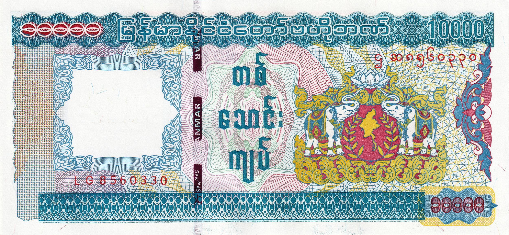
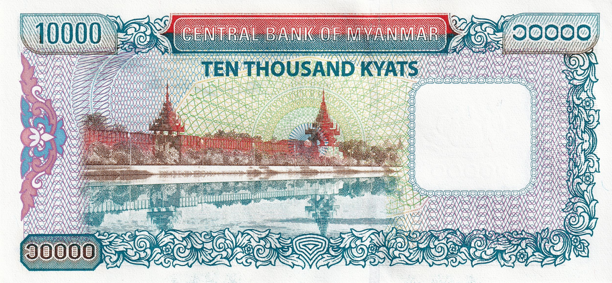

🧐 What are the signs of a counterfeit 10,000 Kyat note? Counterfeit 10,000 Kyat notes are highly sophisticated. The paper quality is very similar to genuine ones, making it difficult to tell the difference by texture alone. So here are some basic features to help you roughly identify them: • The letters "CBM" are missing from the center-left side of the note. (They are present in the genuine version.) • In the counterfeit note, the area where "CBM" should be is smooth, while in the genuine note, that area feels rough to the touch. (Try rubbing it with your fingers.) • Watermarks are present in counterfeit notes too, but they are too prominent. (In genuine notes, the watermark is more subtle.) • Security threads are included in the counterfeit, with visible text on the thread. However, under light, it only reflects purple color. (In the genuine note, the security thread shifts between yellow and purple when tilted.) • The “10,000” text and the small squares in the blue area on the right side are blurry or unclear in the counterfeit. (In the genuine note, these areas are sharp and clearly printed.) • The color in the image of the city wall appears smudged or blurry in counterfeits. (It is clean and distinct in genuine notes.)
 